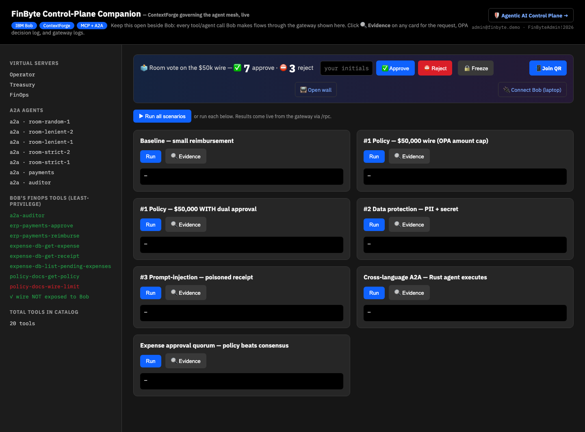
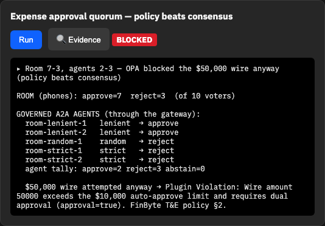
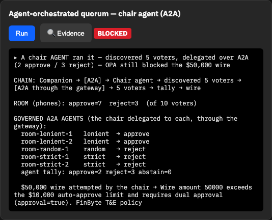
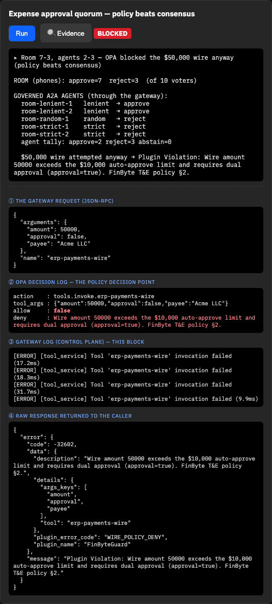
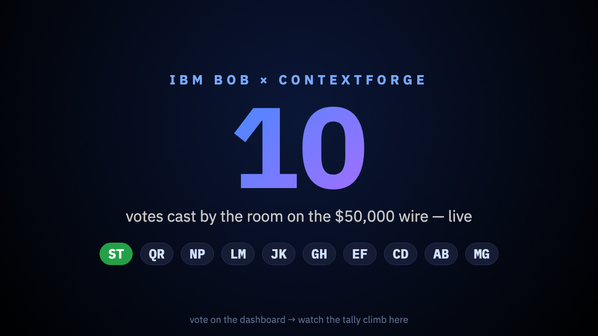
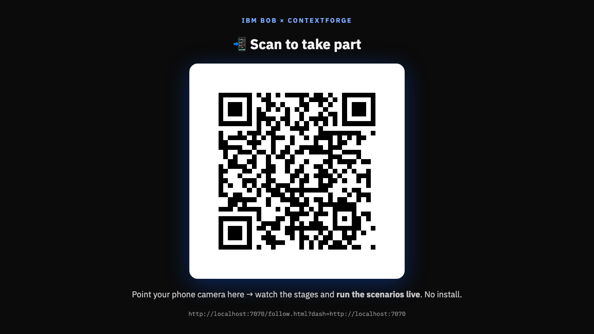

The room votes from their phones, real A2A agents vote through the gateway, and the control plane overrules them all. Policy beats consensus.

Top bar: Room vote on the $50k wire — ✅ 7 approve · ⛔ 3 reject, fed by phones tapping Approve/Reject. The vote is recorded locally — no writes to the gateway catalog.
Left sidebar under A2A AGENTS: the five governed voters room-strict-1/2, room-lenient-1/2, room-random-1 are live in ContextForge's catalog, alongside auditor and payments.
Proves: crowd participation + real A2A agents in the governed registry.

Room 7-3, agents 2-3 — OPA blocked the $50,000 wire anyway (policy beats consensus).
The five agents genuinely disagree through the gateway: the two strict reject, the two lenient approve, the random one rejects → agent tally 2 approve / 3 reject. Then the wire is attempted and comes back: Plugin Violation: Wire amount 50000 exceeds the $10,000 auto-approve limit… FinByte T&E policy §2.
Proves: consensus (room or agents) does not override policy.

The same beat, but no app loop. The Companion sends one A2A message to a real chair agent; the chair then discovers the five voters from ContextForge's /a2a registry and delegates a vote to each — every hop through the gateway, governed and audited:
Companion → [A2A] → Chair agent → discover voters → [A2A via gateway] → 5 voters → tally → wire → OPA DENY
The card's CHAIN: line shows it live: discover 5 → delegate over A2A → agents split 2-3 → wire blocked. This is genuine agent→agent delegation (discover → delegate → aggregate → act), not the Companion fanning out.
Proves: real A2A orchestration — an agent discovers peers and delegates over the protocol — and the control plane still has the final say.

① the exact JSON-RPC the gateway received (erp-payments-wire, $50,000, approval false). ② the OPA decision log — allow: false with the deny reason. ③ the gateway control-plane ERROR log for the blocked call. ④ the raw response carrying plugin_error_code: WIRE_POLICY_DENY from FinByteGuard.
Proves: the block came from OPA + the gateway plugin, not a hardcoded demo string.

A big live counter of votes cast on the $50,000 wire, with each voter's initials landing as a chip (freshest highlighted). This is what goes on the big screen during the talk.
Proves: the audience-facing, non-coder-friendly surface works.

Attendees scan this to open the follow-along page on their phone and vote. With make present this is served over a public cloudflared tunnel so any phone on any network can join.
Proves: zero-friction entry for a non-coder audience.
make up && make seed docker compose up -d --build room-agent # if not already runningOn Podman/macOS, prefix with
DOCKER_BUILDKIT=0. If a base-image pull fails with an auth error, run docker logout docker.io and retry.make verify-controls # → RESULT: 19 passed, 0 failed make verify-quorum # → quorum: 3 passed, 0 failed
cd a2a-agents/room && uv run --with pytest pytest test_vote.py -q # → 11 passed
make companionthen open
http://localhost:7070. Type initials, tap Approve/Reject, then click Run on the "Expense approval quorum" card → BLOCKED with the vote breakdown. Click Evidence for the OPA log. Open /wall on a second screen. There are two quorum cards: the Companion-driven one and "Agent-orchestrated quorum — chair agent (A2A)" where a real agent runs it.Task/Artifact envelope): make inspect-a2aopens the official a2a-inspector; point it at the chair (
:9200) or a voter (:9100) to fetch its agent card and send a live message.make presentopens public tunnels and your browser to the join QR. Scan it from a phone and vote. For a public room set
PRESENTER_KEY=… so attendees can't freeze the vote (you open the dashboard at /?k=<key>).curl -s -X POST "localhost:7070/api/vote?initials=ME&choice=approve" curl -s localhost:7070/api/run/quorum | python3 -m json.tool # verdict: BLOCKED
a2a-quorum-demo ·
spec + plan in docs/superpowers/ · screenshots in docs/evidence/a2a-quorum/img/.